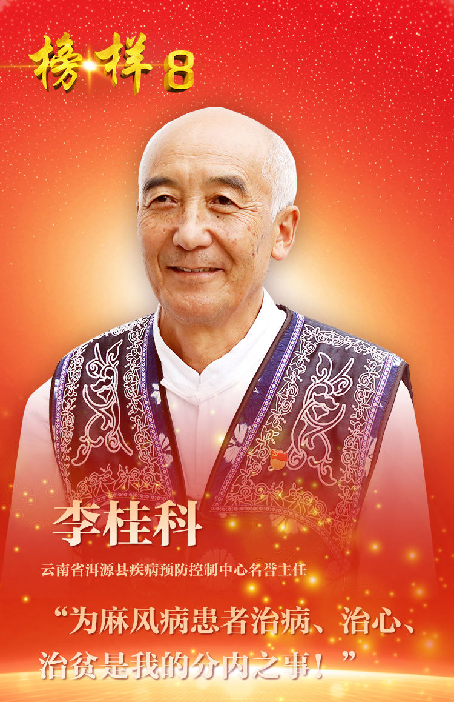

李桂科，男，白族，1957年4月生，中共党员，党的二十大代表，云南省洱源县疾病预防控制中心名誉主任。
精心治愈麻风患者，诠释医者仁心。1981年4月，24岁的李桂科第一次走进住着181名麻风病患者、几乎与世隔绝的洱源县山石屏疗养院，看到简陋的垛木房、脏乱不堪的生存环境，患者嘴歪眼斜、肢体残缺，有的小腿都已有蛆虫并发出臭味，他被深深震撼。离开时，看着大家迷茫的眼神，李桂科做出了一个决定：“留下来，治好他们的病”。他不断探索研究、攻克难关，率先在省内开展麻风足底溃疡家庭治疗手术，为患者找到并引进了麻风病联合化疗方案。经过不懈努力，他和同事们将山石屏和洋芋山两个麻风村的245名麻风病人全部治愈，让这两个地方彻底摘掉了“麻风村”的帽子。
倾心陪伴麻风康复者，书写大爱之心。麻风病虽然治好了，但康复者们普遍存在自卑、孤独的心理，难以真正融入社会。为了帮助他们重拾生活信心，李桂科与康复人员同吃同住同劳动，义务为他们理发、修剪指甲，每逢端午节、火把节、中秋节等，李桂科都会组织康复人员集体过节。他还积极联系大学生志愿者、社团组织到村里开展活动，先后有300多名志愿者走进山石屏村。为解决麻风病患者子女受歧视、无学可上的问题，1993年至2007年，李桂科在麻风院开办小学，孩子们小学毕业后，他又多方奔走把他们送到中学就读。10多年间，这所小学先后招收了20多名孩子，从中走出了6名大学生、1名研究生。
积极开展扶贫帮困，践行初心使命。1990年中秋节，6名麻风康复者渡江收玉米时不幸遇难，群众出行困难的情况深深刺痛了李桂科的心，他东奔西走想办法，带领大家修建了一座通往外界的“连心桥”。2014年3月，李桂科担任山石屏村党支部书记，在党委政府提供集中供养生活保障的基础上，他带领村民们修建蓄水池，种植核桃，发展养殖业，推动山石屏从“麻风村”变成“幸福村”，走上了致富路。2017年，李桂科退休了，但他仍然每天忙碌不停，一如既往照顾康复的村民，还积极奔走修建了全国首个麻风历史博物馆，记录了在党的领导下新中国用60多年的时间彻底消除麻风病对人类几千年危害的伟大成就。他说：“只要我还能动，我还能走，我就要倾尽全力、奉献所有，办好民生实事，让村民身体更健康、生活更幸福、心情更愉悦”。
荣获“全国优秀共产党员”、“全国医德楷模”、“全国五一劳动奖章”、“中国好人”、“中国好医生”等称号。
